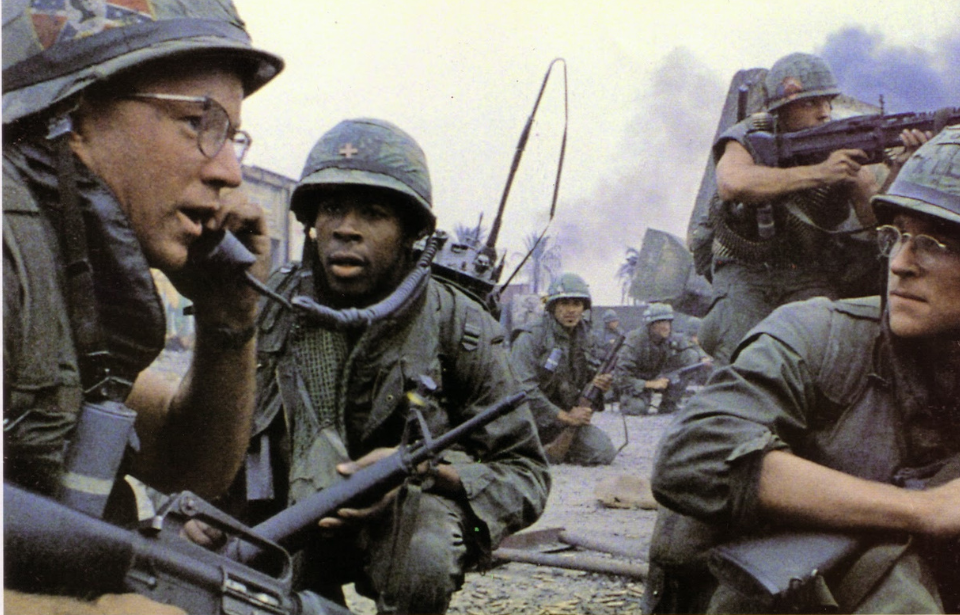
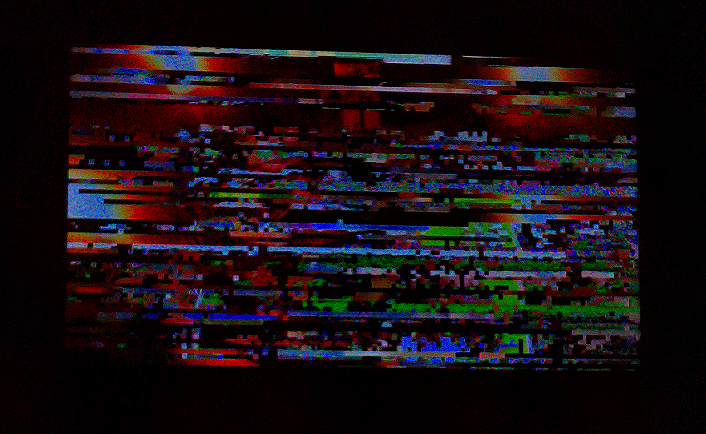

I finally got a chance to watch this movie a couple days ago I thought it was alright I think the part that was the most impactful for me was when joker's platoon gets decimated by a vitcong sniper the whole movie the marine's get buttered up by their drill instructor who treats them like unkillable machine's like wepons of mass destruction completely impervious to any sort of faluire but they get ambushed and decimated by a simple booby trap and a single sniper who was just a little girl who had an AK without a scope in media and in advertising marines are set up as these killing machine's when in reality they arent really all they are made up to be full metal jacket is a fictional film but joker and the events of the film remind me a lot of storm of steel which was a real life memoir written by ernst junger he was a german soilder in WW1 the way he spoke about war about callously killing pepole and still being aware of how wrong it was it really changed my view on how soilder's in wars really think ernst junger was a very smart person he felt remorse at times but in some situation's he didint and in the end he always refeared to war as a "state of nature" which almost sounds like an inhuman thing to say even some of the same things that happend to him in real life happend to joker in the movie like when his platoon gets lost that actually happend to ernst junger and even in the soilders start to get bored in the movie and talk about going out to fight that happend to junger too he litearly wrote about how it was so boring to have nothing to do all day and how he enjoyed leading a night raid even though it meant he had to kill pepole that's how bored and mentally destoryed war made these pepole one thing that stuck with me from the memoir was when ernst said "the government takes away the responsibility but it can never take away the regret" it's such a bizzare dichotomy to dislike war from a moral stand point while still choosing to actively engage in it near the end of the memoir ernst talks about the last time he was injured he was shot in the heart and chest and he had to be taken to a hospital for the remainder of the war and mind you this was after already being injured 2 different times in the hospital he became desprate to go back to battle in the night he snuck out with some of the men and they set up furniture that they decided to jump and vault over to prove to the doctors that they were ready to go back to fight but they didint let them go back and it was shortly after that that WW1 ended and ernst went home I just cant imagine being that nationlistic that you would disregard all the fear and pain all the suffering you had been through just to go back to the "state of nature" I think ernst was a german nationlist but his taste for war was something else entierly and I got the same feeling from full metal jacket I swear that stanley kubirck had to have read the book
I met my boyfriend 8 months ago he randomly DM’d me on instagram and I mistook him for a different person who coincidentally said that they had friended me the same day I pretty quickly figured out that they were a different person then the person I had been talking to before but I was totally obsessed and I didn't care we just didn't stop talking it went on for hours every day and we were immediately in love but it’s been a difficult relationship since then my boyfriend lives in malaysia and I obviously live in the US the difference in our time zones makes so that he is asleep when im awake and vice versa usually I can only talk with him in the morning time since that's around the time he is getting ready for bed and at around 9-10 PM since that’s the morning time over there when he’s just waking up sometimes me or him will just stay up really late just to talk with each other and play video games I think it’s messed up our sleep schedules a lot another thing that makes things difficult is that queer expression and same sex marrige is illlegal in malaysia he could get in trouble just for being my boyfriend so he just cant let anyone know that he is gay or that he has a boyfriend it really worries me that he could get in so much trouble bc of me im so desprate to see him but it’s just not safe to visit him it really sucks to be in a relationship with such an amazing person but to have so much holding me back I miss him all day every day I wish he could be here it wont be long before well have know eachother for a year
a lot of pepole give up on long distance relationships but im holding on bc I know he is worth waiting for I dont think I could for anyone else
I kinda beat myself up sometimes about giving up on updating my website but I think im over it when I think back to all the times ive told pepole that I have a website and that they should make their own bc it's very easy I have usually gotten a negative response it's treated like it's weird or like it's something skilled to do I almost get a look of distian like they question why someone would make a website or why I would ask them to do it too I think the fact that I took the time to learn the basics and make a bare bones website was already a lot compared to what a lot of other ppl would be willing to do

it might be fan fictions just to warm up im probably pretty rusty and I want to have some fun with it first I was thinking it might be fun if I could write some beastars fan fictons that show has a lot of potential I also just realized I never dropped that pseudo-essay but it dosent matter now everything I have on hand I can put on my webiste now I dont think I ever finished anything in fact I threw away almost everything I wrote I have the unfinished essay and 3 pages of something that I made as a little demo for a comic but my boyfriend didint want to illustrate it I think everything else was too cringe or poorly written to display here but I do remeber writting a fake fanfiction once called tom clancy VS. james bond it was entirely satirical so maybe I could add that one too if I find it anyways I have work today so I cant stick around for so long trust me ill be doing this as soon as possible
I just filled out an application and went through one of the dumbest thing's ive ever seen an automated interview I had to turn on my camera and mic. and all so I could answer questions by clicking pre filled responses and end up on a section where the audio was broken in fact I tried everything to get it to work but it didint so I had to just click through the questions on that one and it just gave me an automated email at the end saying I failed like fuck off this was your fault I could have quit it and then sent an email but it's timed and I didint feel like waiting until my application became invalid to get a solution in fact I shouldent have to these places arent worth my time I shouldent have to fill out a full assesment for a minimum wage job period that's stupid im at the point now where I would be glad to go work at the gas station bc honestly it dosent seem like having a high school diploma is really all that different then not having one at all the job's are all the same bc all the good ones I apply to that require a high school diploma never get back to me or even send an automated email I also hate having to make a profile for multiple different websites of all these companies im so sick of that too